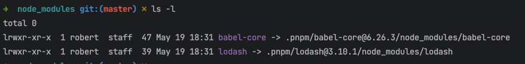
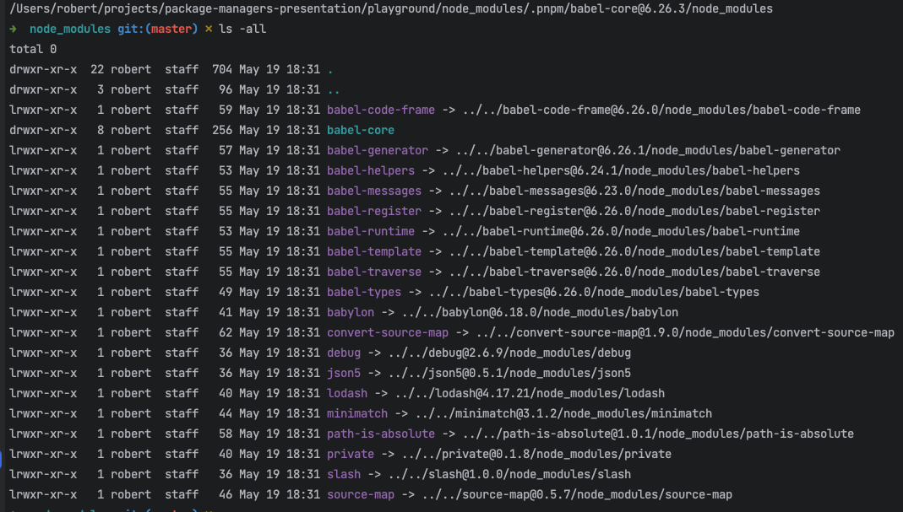
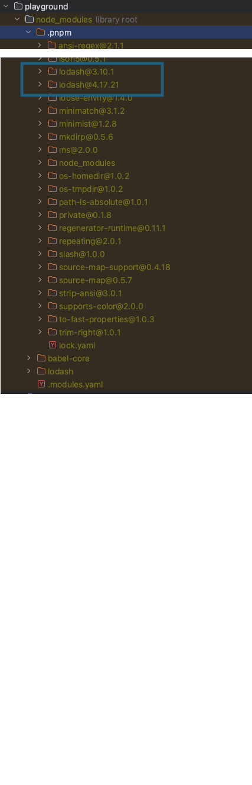

Package Managers
What can you pick?
- yarn
- yarn 2
- npm
- pnpm
Recap on dependency resolution
Flat resolution
{
"name": "playground",
"version": "1.0.0",
"main": "index.js",
"license": "MIT",
"dependencies": {
"babel-core": "^6.26.3",
"lodash": "^4.17.21"
}
}

Conflicts
{
"name": "playground",
"version": "1.0.0",
"main": "index.js",
"license": "MIT",
"dependencies": {
"babel-core": "^6.26.3",
"lodash": "^3.10.1"
}
}

Problems with npm and yarn
- They use copy/paste mechanism for dependencies
- Similar in terms of performance (yarn a bit faster)
- They already have "successors": pnpm and yarn 2
Yarn 2
- No node_modules -> migration is required
- PnP -plug and play mode (on by default)
- Adoption of yarn 2 is very slow, no big players using it
- You can upgrade and keep node_modules
pnpm
- Faster and better than npm
- Saving disk space - using symlinks
- Non flat modules structure
- Smaller and more readable lock file
- Easy migration
- Can support PnP (off by default)
- Supported by Prisma, Vercel and used by Microsoft, Vue and more
- Node 16
pnpm



Performance

Workspaces
Npm, yarn, pnpm supports workspaces
All can work with lerna or NX
No significant differences here
What should you choose?
pnpm is better than npm
yarn 2 is better than yarn 1
pnpm vs yarn 2
PNPM
Easy transition - no significant changes required
Fast enough
Gaining popularity
Requires Node 16